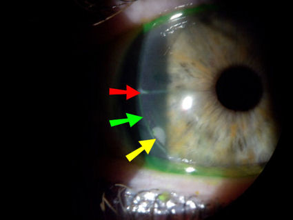
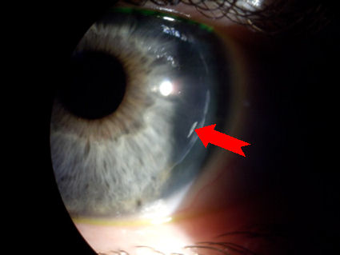
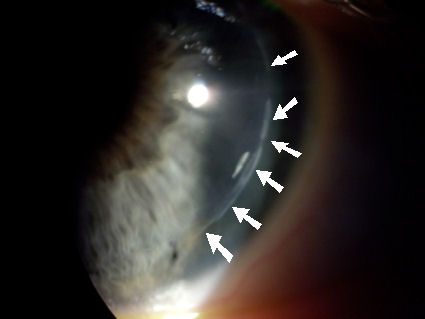

Врастание эпителия
Р. Дойл Столтинг, доктор медицинских наук:"При патологоанатомическом исследовании около 50% всех пациентов, перенесших операцию LASIK, обнаруживают послеоперационное врастание эпителия." Источник: EyeWorld, март 2006
"Зарегистрированная частота врастания эпителия после операции LASIK варьировала от 0%-3,9% при первичном лечении до 10%-20% при повторном лечении".; Источник: Тинг Д.С., Шринивасан С., Данжу Ж. Врастание эпителия после лазерного кератомилеза in situ (LASIK): распространенность, факторы риска, лечение и визуальные результаты. Открытая офтальмологическая конференция BMJ 2018;3:e000133. doi: 10.1136/bmjophth-2017-000133
Врастание эпителия или другие проблемы, связанные с LASIK? Отправьте отчет о медицинском наблюдении с Управлением по санитарному надзору за качеством пищевых продуктов и медикаментов в режиме онлайн. Кроме того, вы можете позвонить в Управление по санитарному надзору за качеством пищевых продуктов и медикаментов по телефону 1-800-FDA-1088, чтобы сообщить об этом по телефону. бумажный бланк и либо отправьте его по факсу на номер 1-800-FDA-0178, либо отправьте по почте на адрес, указанный внизу страницы 3, либо загрузите Мобильное приложение MedWatcher для сообщения о проблемах с LASIK в FDA с помощью смартфона или планшета. Ознакомьтесь с образцом Отчеты о травмах, полученных с помощью LASIK в настоящее время находится на рассмотрении в FDA.
Пациенты с осложнениями LASIK приглашаются на присоединяйтесь к обсуждению на FaceBook
Сообщалось о методах лечения врастания эпителия Цитата: "Методы удаления включают выскабливание эпителиальных врастаний и эксимерлазерную фототерапевтическую кератэктомию (ПТК). Лоскут фиксируется, и врастание удаляется путем отслаивания в виде пластинки с помощью тонких щипцов или путем соскабливания как со стромального ложа, так и с нижней поверхности лоскута. Затем слой тщательно промывают перед заменой лоскута. Эксимерный лазер PTK также может быть использован для удаления эпителиальных клеток. Дополнительные методы, такие как криотерапия, Nd:YAG лазер, митомицин С и наложение швов, могут снизить частоту рецидивов. Некоторые авторы сообщают об успехах лечения рецидивов этанолом и лазером. Основной проблемой в лечении врастания эпителия является высокая частота рецидивов после лечения. Сообщалось, что частота рецидивов врастания эпителия после лечения достигает 44%." Конец цитаты. (Источник: Амар Агарвал, доктор медицинских наук, FRCS, FRCOphth. Советы по профилактике и лечению врастания эпителия после LASIK Американское издание "Новости глазной хирургии", 1 октября 2006 г.). Примечание редактора: Веб-мастер этого сайта не одобряет такие методы лечения .
Врастание эпителия изображения ниже любезно предоставлены доктором Эдвардом Бошником.
На этом глазу, представленном на фотографии ниже, были проведены 2 отдельные операции по удалению RK, за которыми последовали 2 отдельные процедуры LASIK. Последняя операция по удалению LASIK у этой пациентки была проведена в 2004 году. В 2013 году под лоскутом LASIK левого глаза была обнаружена большая колония эпителиальных клеток. Через год эта группа эпителиальных клеток распалась и мигрировала в центральную область роговицы под лоскутом LASIK. "Блестящее" изображение, показанное на этой фотографии, на самом деле представляет собой эпителиальные клетки, которые мигрировали с поверхности роговицы в области под лоскутом LASIK. Недавно специалист по роговице из всемирно известного офтальмологического института отказался приподнять лоскут LASIK, чтобы удалить остатки клеток, которые сейчас находятся под ним. (Яркий белый свет, видимый в левой части фотографии, является отражением лампы в микроскопе.) Нажмите на изображение, чтобы увеличить.
На фотографии ниже показан глаз с врастанием эпителия после операции LASIK, которое проявляется в виде пятнистого белого пятна на роговице в положении 7:00. Пациенту была проведена операция LASIK, за которой последовала повторная операция LASIK (усиление), и впоследствии развилось врастание эпителия. В индустрии LASIK общеизвестно, что повторные операции LASIK сопряжены с более высоким риском врастания эпителия, чем первичные операции LASIK. Пациенты, которые соглашаются на повторные операции LASIK, должны быть предупреждены о повышенном риске развития этого потенциально опасного для зрения осложнения. Этой пациентке была проведена коррекционная операция по удалению врастания эпителия, которая включала в себя поднятие лоскута; однако врастание эпителия вернулось. Нажмите на изображение, чтобы увеличить.
На фотографии ниже представлена роговица после операции LASIK с врастанием эпителия и эктазия . Инородный предмет, расположенный по периметру роговицы, представляет собой имплантируемую пластиковую вставку, называемую ПОТРЕБЛЯЕМЫЕ ВЕЩЕСТВА , который был имплантирован в попытке сгладить эктазию. Т-образный белый шрам в положении "9:00" - это разрез, который был сделан для введения Intacs в роговицу. Молочная полоса, проходящая с 7:00 до 8:00, - это врастание эпителия. Нажмите на изображение, чтобы увеличить.
.jpg)
На фотографии ниже представлена роговица пациента, перенесшего операцию LASIK в 2007 году. Эта роговица чрезвычайно сухая и неправильной формы. Кроме того, эпителиальные клетки с внешней поверхности роговицы проникли под лоскут LASIK и выросли под ним. С 5:00 до 8:00 часов клетки можно увидеть в виде белой линии, идущей от нижней части роговицы. Пациент носит специальную газопроницаемую склеральную линзу для защиты травмированной ткани роговицы. Нажмите на изображение, чтобы увеличить.
На фотографии ниже изображена роговица пациента, который перенес операцию LASIK в Канаде в 2009 году и у которого развилось сильное врастание эпителия. Вы можете видеть область врастания эпителия с 5:00 до 8:00 часов. Клетки наружного слоя роговицы мигрировали под лоскут LASIK. На данный момент неизвестно, продолжат ли клетки размножаться под лоскутом. Эта роговица чрезвычайно сухая и неправильной формы. Пациент жалуется на ощущение инородного тела, ощущение песка в глазах и постоянное жжение. Пациент также жалуется
на искаженное зрение, в том числе на звездочки, ореолы и блики. Врастание эпителия легко заметить, однако хирург, проводивший эту операцию, сказал пациенту, что в этом глазу нет ничего необычного и что он не может сказать, что пациенту делали операцию LASIK. Нажмите на изображение, чтобы увеличить.
На фотографии ниже изображена роговица пациента, у которого наблюдается врастание эпителия после операции RK, RK enhancement, LASIK и LASIK-улучшения. Красная стрелка указывает на все еще открытый разрез RK. Зеленая стрелка указывает на незаживший край лоскута LASIK. Желтая стрелка указывает на очаг врастания эпителия, который является потенциально опасным для зрения осложнением. Пациент испытывает постоянную боль в дополнение к крайне нечеткому и искаженному зрению.

На двух изображениях ниже представлены фотографии левого глаза профессионального бейсболиста, который перенес операцию LASIK и у которого впоследствии развилось врастание эпителия. На верхней фотографии красная стрелка указывает на скопление эпителиальных клеток на границе между лоскутом и нижележащей роговицей. На нижнем снимке белые стрелки указывают на эпителиальные клетки, растущие под лоскутом по краям лоскута. У этого пациента врастание эпителия в оба глаза. Из-за этого состояния он не может видеть достаточно хорошо, чтобы отбивать мяч во время ночных бейсбольных матчей.


Следующее изображение - это скан, сделанный Доктор Эдвард Бошник снимок роговицы после операции LASIK с врастанием эпителия. Это изображение получено с помощью визуализирующего сканера переднего сегмента Visante OCT. Эта технология имеет множество применений в диагностике и лечении пациентов с заболеваниями роговицы или проблемами после рефракционной хирургии. Нажмите на изображение, чтобы увеличить изображение.
Отчет, поданный в Управление по санитарному надзору за качеством пищевых продуктов и медикаментов: у пациента наблюдается врастание эпителия после улучшения LASIK
http://www.accessdata.fda.gov/scripts/cdrh/cfdocs/cfmaude/detail.cfm?mdrfoi__id=2727666
В клинике сообщили, что пациентка с лазерной коррекцией зрения прошла курс лечения по подтяжке левого глаза и вернулась через неделю после операции, сообщив об изменении зрения и двоении в левом глазу. Острота зрения пациента на левый глаз составила 20/25. При осмотре с помощью щелевой лампы на 4-6 часах был выявлен рост эпителия. Пациентку доставили в лазерный кабинет, подняли лоскут и удалили нарост эпителия. Пациент был осмотрен на следующий день, и острота зрения на левом глазу составила 20/20. Пациенту была установлена контактная линза с повязкой, которая была снята через три дня.
Повторное врастание эпителия через 4 года после LASIK, о котором сообщили в FDA
http://www.accessdata.fda.gov/scripts/cdrh/cfdocs/cfMAUDE/detail.cfm?mdrfoi__id=2339383
Клиника сообщила, что у пациентки, которая примерно 4 года назад проходила курс лазерного лечения для улучшения зрения, было обнаружено врастание эпителия в правый глаз. Эпителиальное врастание было удалено в [отредактировано] 2011 году. В 2011 году [отредактировано] пациентка вернулась на физиотерапевтическое обследование в связи с помутнением зрения в правом глазу. У пациентки было диагностировано рецидивирующее врастание эпителия. Хирург приподнял лоскут и удалил врастание. Это повторяющееся событие для данного медицинского учреждения, и о подобном событии сообщалось в [отредактированном] 2011 году в Medwatch 3006695864-2011-00058.
Что такое врастание эпителия?
Поверхностный слой роговицы - это эпителий. При повреждении эпителиальные клетки регенерируют. Под эпителием находится строма роговицы. Лезвие, которым срезается лоскут LASIK, проникает примерно на треть толщины стромы роговицы. Место, где лоскут соприкасается с роговичным ложем, называется границей раздела. Эпителиальные клетки могут быть имплантированы на границе раздела либо во время создания лоскута, либо могут мигрировать под лоскут после операции. Эпителиальное врастание - это термин, обозначающий клетки, растущие под лоскутом LASIK.
Медицинское исследование посмертных образований роговицы после "успешной" операции LASIK показало, что врастание эпителия различной степени происходит в 47% роговиц ( смотрите аннотацию ниже ). Риск врастания эпителия повышается при повторных операциях, связанных с удалением лоскута.
Незначительные случаи врастания эпителия за пределы зрачка могут не оказывать негативного влияния на зрение. Однако врастание эпителия, которое затрагивает поле зрения, может привести к ухудшению зрения. В некоторых случаях требуется хирургическое вмешательство. После хирургического вмешательства часто наблюдается рецидив врастания эпителия. Врастание эпителия может привести к расплавлению лоскута и серьезной потере зрения.
Послелазерное врастание эпителия при кератомилеозе in situ и его связь с аномалией рефракции до лечения.
Роговица. 2011, май;30(5):550-2.
Мохаммед ТА, Хоффман Р.С., Файн И.Х., Пакер М.
Абстрактный
ЦЕЛЬ: Оценить частоту врастания эпителия после лазерного кератомилеза in situ и его взаимосвязь с лечением миопии или гиперметропии.
МЕТОДЫ: В этом ретроспективном исследовании были проанализированы 1000 последовательных процедур LASIK, выполненных тремя хирургами с использованием идентичной хирургической техники с использованием микрокератома Hansatome. Глаза, в которых наблюдалось врастание эпителия, оценивались с помощью системы оценки Machat. Пациенты были разделены на 2 группы (близорукие и дальнозоркие) в зависимости от предоперационной аномалии рефракции.
результаты: Общая частота врастания эпителия составила 4,7%. Частота после первичной обработки составила 3,9%. Частота после усовершенствования составила 12,8%. Общая частота врастания эпителия составила 3% в группе с миопией по сравнению с 23% в группе с гиперметропией. После первичного лечения миопии частота врастания эпителия составила 3% по сравнению с 17% после первичного лечения гиперметропии. Частота после улучшения составила 7% в группе близоруких и 43% в группе дальнозорких.
ВЫВОДЫ: У пациентов, перенесших лазерный кератомилез in situ при дальнозоркости, частота врастания эпителия выше, чем у пациентов, проходящих лечение при близорукости. Кроме того, частота повторных процедур выше, чем первичных.
Послелазерное врастание эпителия при кератомилеозе In Situ и его связь с аномалией рефракции до лечения.
Мохаммед ТА, Хоффман Р.С., Файн И.Х., Пакер М.
Роговица. 2011, май; 30(5):550-552.
ЦЕЛЬ: Оценить частоту врастания эпителия после лазерного кератомилеза in situ и его взаимосвязь с лечением миопии или гиперметропии.
МЕТОДЫ: В этом ретроспективном исследовании были проанализированы 1000 последовательных процедур LASIK, выполненных тремя хирургами с использованием идентичной хирургической техники с использованием микрокератома Hansatome. Глаза, в которых наблюдалось врастание эпителия, оценивались с помощью системы оценки Machat. Пациенты были разделены на 2 группы (близорукие и дальнозоркие) в зависимости от предоперационной аномалии рефракции.
РЕЗУЛЬТАТЫ: Общая частота врастания эпителия составила 4,7%. Частота после первичной обработки составила 3,9%. Частота после усовершенствования составила 12,8%. Общая частота врастания эпителия составила 3% в группе с миопией по сравнению с 23% в группе с гиперметропией. После первичного лечения миопии частота врастания эпителия составила 3% по сравнению с 17% после первичного лечения гиперметропии. Частота после улучшения составила 7% в группе близоруких и 43% в группе дальнозорких.
ВЫВОДЫ: У пациентов, перенесших лазерный кератомилез in situ при дальнозоркости, частота врастания эпителия выше, чем у пациентов, проходящих лечение при близорукости. Кроме того, частота повторных процедур выше, чем первичных.
Лечение врастания эпителия после лазерного кератомилеза In Situ в условиях высококлассной медицинской помощи на роговице.
Рапуано Си Джей.
Роговица. 21 января 2010 года.
ЦЕЛЬ: Провести обзор лечения врастания эпителия после лазерного кератомилеза in situ (LASIK) в роговичной клинике Глазного института Уиллса с 1996 по 2007 год.
МЕТОДЫ:: Были проанализированы данные всех пациентов, направлявшихся в клинику Wills Eye Cornea Service после операции LASIK. Были проанализированы истории болезни всех пациентов с диагнозом "врастание эпителия". Данные включали демографические данные пациента, историю его предыдущих посещений, остроту зрения, размер и локализацию врастания, а также методы лечения. Были получены дополнительные данные о глазах, которым удаляли врастание по желанию.
РЕЗУЛЬТАТЫ: За период исследования триста пять пациентов (153 женщины и 152 мужчины, средний возраст: 44,7 года) были направлены на лечение по поводу проблем со зрением после операции LASIK. Врастание эпителия было подтверждено у 46 пациентов (15%) (19 женщин и 27 мужчин, средний возраст 47,4 года) на 55 глазах (27 правых и 28 левых). Пациенты с врастанием эпителия наблюдались в среднем через 26 месяцев после операции LASIK (диапазон: от 0,5 до 108 месяцев). Двадцать четыре глаза ранее подвергались пластической операции, 2 - дважды. На четырнадцати глазах ранее удаляли эпителиальные наросты, на 8 - более одного раза (диапазон: 2-8). На 35 глазах было рекомендовано простое наблюдение. На 7 глазах удаление эпителия было рекомендовано лечащим врачом. Тринадцати глазам была проведена подтяжка лоскута и удаление эпителия в клинике Wills Eye; на 9 глазах было наложено ушивание лоскута. На одном глазу потребовалось повторное лечение с наложением лоскута и фибриновым клеем, после которого рецидива не было обнаружено. В остальных 12 глазах у 9 не было рецидива, у 2 - небольших рецидивов и у 1-крупного рецидива (средний срок наблюдения: 16 месяцев).
выводы:: Врастание эпителия после LASIK не является редкостью в нашей практике лечения. Может наблюдаться незначительное врастание, в то время как значительное врастание может хорошо поддаваться удалению с низкой вероятностью рецидива.
"Врастание эпителия является относительно распространенным осложнением LASIK. Факторами риска его развития являются дефекты эпителия во время операции или вскоре после нее, дистрофия базальной мембраны эпителия, гиперметропическая коррекция по методу LASIK, повторные операции по методу LASIK, нестабильность лоскута, наличие диффузного пластинчатого кератита (ДЛК) и врастание эпителия в соседний глаз в анамнезе. Хотя, по имеющимся данным, заболеваемость достигает 20%, лечение потребовалось менее чем в 1% случаев в 2 крупных сериях исследований. У большинства пациентов врастание эпителия протекает бессимптомно, но при обследовании выявляются незначительные изменения. На краю лоскута в области врастания часто можно увидеть окрашивание флуоресцеином, поскольку обычно наблюдается неполная адгезия лоскута к подлежащей строме. Врастание эпителия, вероятно, происходит после операции с проникновением эпителиальных клеток под лоскут. Другая возможность заключается в том, что имплантация эпителиальных клеток на границе раздела фаз во время операции приводит к врастанию эпителия. В большинстве случаев имеется непрерывность между эпителием на границе раздела и поверхностным эпителием с неполной адгезией края лоскута, что позволяет предположить, что вероятной причиной является послеоперационная инвазия."
Источник: Рефракционная хирургия катаракты. 2004, апрель;30(4):929-31. Прогрессирующее врастание эпителия через 6 месяцев после лазерного кератомилеза in situ. Латкани РА, Хак ФЕ, спикер МГ.
Позднее врастание эпителия после лазерного кератомилеза in situ.
Тодани А, Мелки СА.
J Рефракционная хирургия катаракты. Ноябрь 2009;35(11):2022-3.
Мы сообщаем о случае позднего врастания эпителия, которое произошло между 17 и 20 месяцами после лазерного кератомилеза in situ (LASIK) без осложнений. Пациентка отрицала наличие в анамнезе травм или симптомов, свидетельствующих о разрушении эпителия. Лечение после операции LASIK включало в себя снятие лоскута и соскабливание эпителиальных клеток с последующим наложением швов на роговичный лоскут на несколько недель и ношение контактной линзы-повязки на 3 дня. Была отмечена постепенная регрессия эпителиальных клеток. Последняя зафиксированная некорригированная острота зрения вдаль через 24 месяца после выскабливания составила 20/25. Врастание эпителия может произойти через много месяцев после операции LASIK даже при отсутствии предрасполагающих факторов, таких как травма или синдром рецидивирующей эрозии.
Результаты патологоанатомического исследования роговицы после успешного лазерного кератомилеза in situ.
Крамер Т.Р., Чакпайвонг В., Доусон Д.Г., Л'Эрнолт Н., Гроссниклаус Х., Эдельхаузер Х.Ф.
Роговица. Январь 2005;24(1):92-102.
Офтальмологический центр Эмори, Университет Эмори, Атланта, Джорджия 30322, США. Theresa_Kramer@emoryhealthcare.org
ЦЕЛЬ: Изучить гистологические и ультраструктурные особенности роговицы человека после успешного лазерного кератомилеза in situ (LASIK).
МЕТОДЫ: Роговицы 48 глаз 25 посмертных пациентов были обработаны для гистологического исследования и просвечивающей электронной микроскопии (ПЭМ). 25 пациентам была проведена операция LASIK в период от 3 месяцев до 7 лет до смерти. Оценку всех 5 слоев роговицы и области, прилегающей к лоскуту LASIK, проводили с использованием обычной гистологии, периодических образцов, окрашенных кислотой Шиффа (PAS), толстых срезов, окрашенных толуидиновым синим, и ПЭМ.
РЕЗУЛЬТАТЫ: У пациентов, у которых была известна острота зрения, в первый послеоперационный день острота зрения без коррекции составляла от 20/15 до 20/30. У пациентов, у которых имелись клинические данные, послеоперационная топография роговицы была нормальной, а клиническое обследование показало полукруглое помутнение по краю раны лоскута LASIK. Гистологически размер лоскута LASIK составлял в среднем 142,7 мкм (диапазон 100-200). Во всех роговицах был обнаружен целый спектр аномальных гистопатологических и ультраструктурных изменений. На поверхности лоскута были обнаружены удлиненные базальные эпителиальные клетки, гиперплазия эпителия, утолщение и волнистость эпителиальной базальной мембраны (ЭБ) и волнистость слоя Боумена. Находки в ране или рядом с ней включали разрушение коллагеновых пластинок; активированные кератоциты; неподвижные кератоциты с небольшими вакуолями; врастание эпителия ; эозинофильные отложения; PAS-положительный, электронно-плотный гранулированный материал с вкраплениями случайно упорядоченных коллагеновых фибрилл; увеличенное расстояние между коллагеновыми фибриллами; и широко разнесенный полосчатый коллаген. Не было обнаружено заметной корреляции между послеоперационными интервалами и тяжестью или типом патологических изменений, за исключением накопления электронноплотного гранулированного материала.
ВЫВОДЫ: Во всех роговицах после операции LASIK наблюдались стойкие патологические изменения. Эти изменения были наиболее распространены в области межслойной раны. Эти изменения, наряду с другими патологическими изменениями в роговицах после операции LASIK, могут повлиять на функциональность роговицы после операции LASIK.
Из полного текста: В ходе текущего исследования мы обнаружили, что врастание эпителия произошло в 20 из 43 роговиц (47%).
Ампутация лоскута с фототерапевтической кератэктомией (ПТК) и введением адъюванта митомицина С при сильном врастании эпителия после операции LASIK.
Кимионис Г, Иде Т, Ю С.
Евро и офтальмология. Март-апрель 2009 г.;19(2):301-33.
Глазной институт Баск-Палмера, Медицинская школа Миллера Университета Майами, Майами, Флорида, США.
цель. Сообщить о пациенте с тяжелым постлазерным кератомилезом in situ (LASIK), врастанием эпителия и кератолизом, которому были выполнены ампутация лоскута и фототерапевтическая кератэктомия (ПТК) с интраоперационным введением митомицина С (ММЦ).
методы. Отчет по делу.
результаты. 55-летняя женщина была направлена в наше отделение в связи с сильным разрастанием эпителия после операции LASIK и расплавлением роговицы через 2 года после первичной операции LASIK. У пациента были две предыдущие попытки лечения врастания эпителия (подтяжка лоскутом и ручное удаление врастания эпителия), которые не увенчались успехом. Биомикроскопия с использованием щелевой лампы и оптическая когерентная томография переднего сегмента показали обширное врастание эпителия и кератолиз (истончение лоскута LASIK), в то время как у пациента была светобоязнь и он не переносил контактные линзы. Была выполнена ампутация лоскута с последующей ПТК (для сглаживания неровностей роговицы, вызванных кератолизом и/или изменениями толщины лоскута) и дополнительным интраоперационным применением ММК в течение 2 минут. В течение периода наблюдения не наблюдалось никаких интра- или послеоперационных нежелательных явлений. Через шесть месяцев после процедуры некорригированная острота зрения улучшилась до 20/40 по сравнению с 20/50 до операции, в то время как лучшая острота зрения с коррекцией очками улучшилась с 20/40 до 20/32. Топографический астигматизм был уменьшен с 3,24 диоптрий (D) до 1,00 D.
выводы. Ампутация лоскута с использованием PTK и адъювантной интраоперационной MMC является одним из вариантов лечения тяжелого врастания эпителия после операции LASIK с кератолизом.
Отказ от ответственности: Информация, содержащаяся на этом веб-сайте, представлена с целью предупреждения людей об осложнениях процедуры LASIK перед операцией. Пациентам, у которых возникли проблемы с процедурой LASIK, следует обратиться за консультацией к врачу.